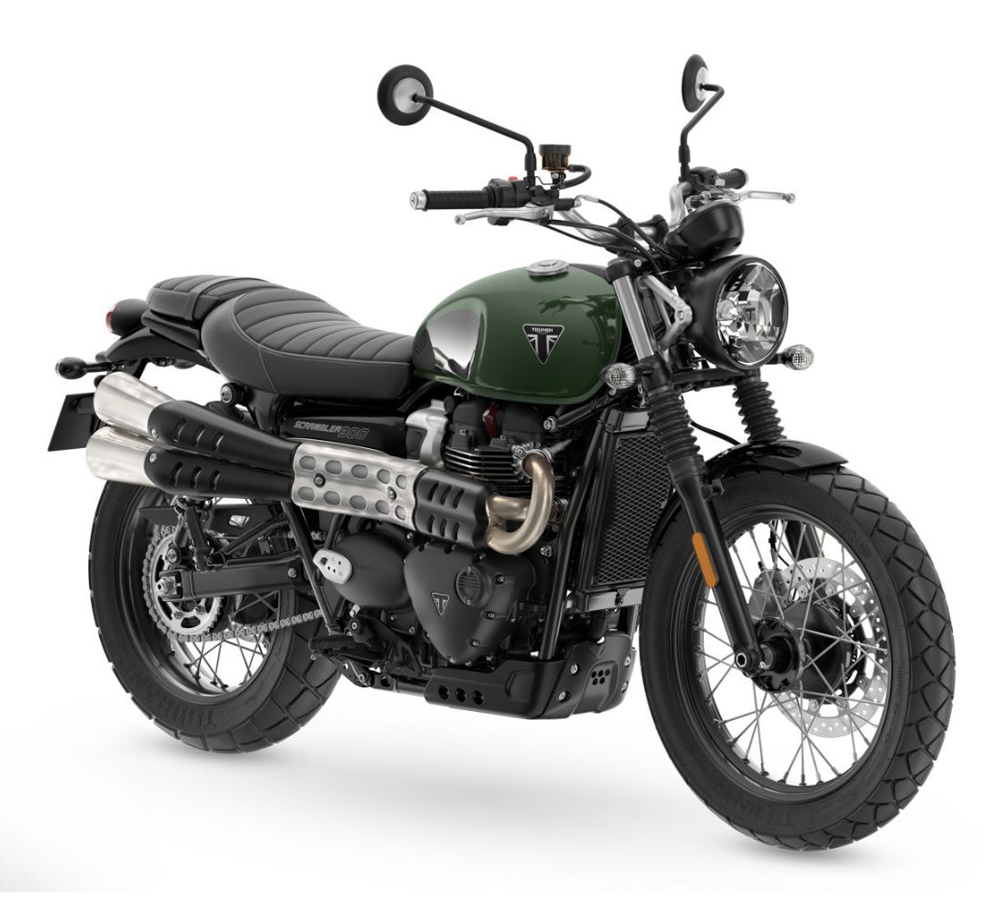

Descubre la historia sobre ruedas
Explora las motos más emblemáticas del Reino Unido, como la Triumph Bonneville y la Norton Commando.

>
Triumph Bonneville, un clásico británico
Explora las motos más emblemáticas del Reino Unido, como la Triumph Bonneville y la Norton Commando.
Triumph Bonneville, un clásico británico